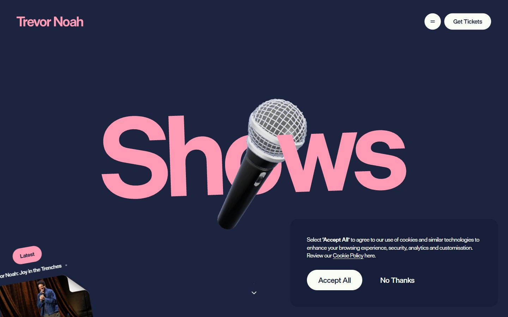
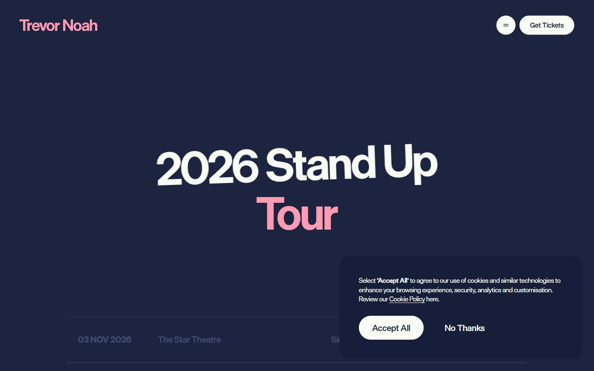
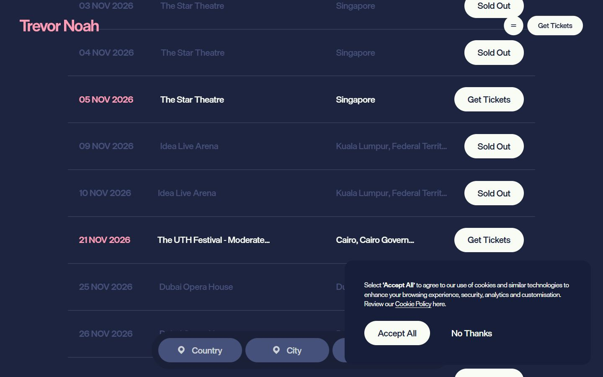
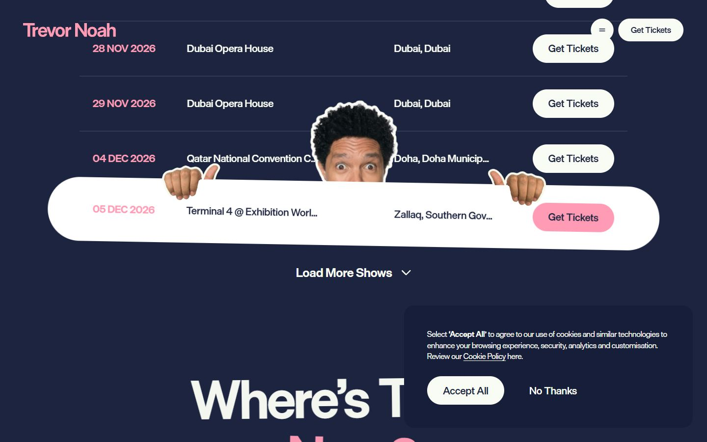
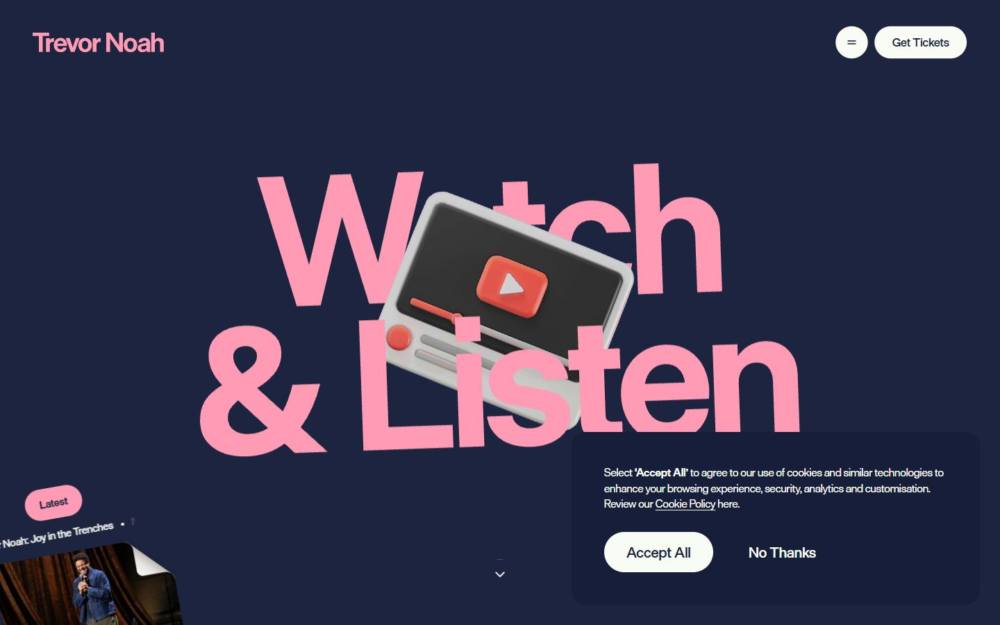
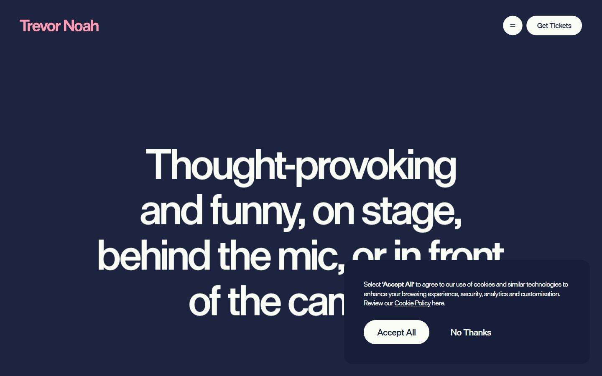
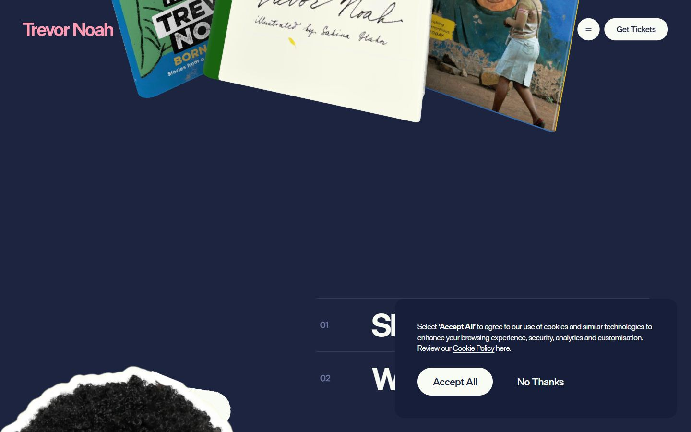
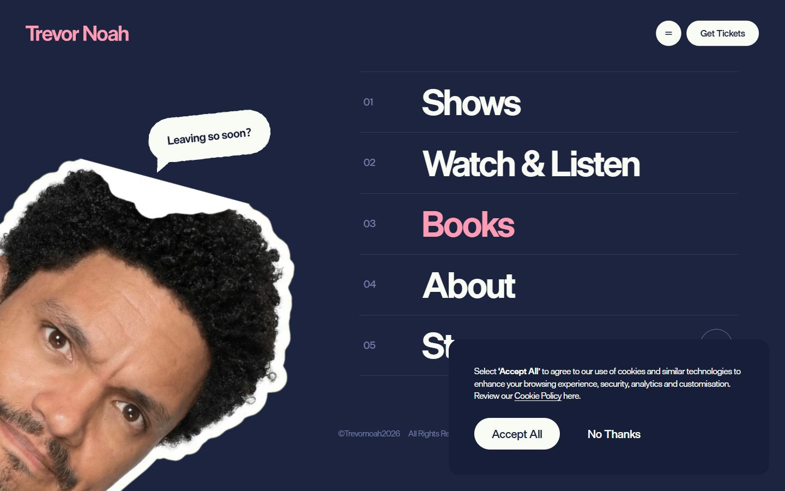

Trevor Noah
Captures desktop

Pages internes








Mobile
Stack détectée
CMS Contentful, GSAP, Lenis, Locomotive Scroll, Postprocessing, ScrollTrigger, SplitText/SplitType, Taxi.js, Three.js, Virtual scroll, WebGL, Webflow, jQuery
Versions : GSAP 3.14.2 · Three.js r?
Shaders GLSL personnalisés extraits : 34 (voir shaders.glsl)
Design tokens
Couleurs (fonds, pondérées par surface)
#2b2b2b · #f9fcf4 · #6f7ba9 · #ff9bb4
Couleurs de texte
#f9fcf4 · #ff9bb4 · #6f7ba9 · #1d2440
Polices utilisées (par volume de texte)
Die Grotesk C · Die Grotesk D
Fichiers de police chargés
Typographie
| Élément | Police | Taille | Graisse | Interligne | Interlettrage | Casse |
|---|---|---|---|---|---|---|
| h1 | "Die Grotesk D", sans-serif | 361.462px | 700 | 343.389px | normal | none |
| h2 | "Die Grotesk D", sans-serif | 98.8063px | 500 | 108.687px | normal | none |
| h3 | "Die Grotesk D", sans-serif | 60.5138px | 700 | 63.5395px | normal | capitalize |
| p | "Die Grotesk D", Arial, sans-serif | 108.38px | 700 | 119.217px | normal | none |
| a | "Die Grotesk C", sans-serif | 21.4189px | 500 | 21.4189px | normal | capitalize |
| button | "Die Grotesk C", sans-serif | 21.4189px | 500 | 21.4189px | normal | capitalize |
| li | "Die Grotesk C", sans-serif | 19.3676px | 400 | 27.1147px | normal | none |
| body | "Die Grotesk C", sans-serif | 19.3676px | 400 | 27.1147px | normal | none |
Échelle des tailles de texte
60.5138px (16) · 15px (15) · 19.3676px (12) · 98.8063px (11) · 65.1383px (10) · 24.1027px (9) · 21.4189px (6) · 108.38px (5) · 25.4704px (3) · 23.2412px (3) · 16px (3) · 361.462px (1)
Arrondis
16.1437px · 58.1027px · 29.0514px · 50% · 60px
Transitions CSS fréquentes
Points de rupture (media queries)
479px · 991px · 767px · 768px
Animations CSS (@keyframes)
spin
Variables CSS (:root)
--_trevor-tokens---font-primary: "Die Grotesk C",Arial,sans-serif; --section-padding: calc(3.5em + (var(--gap)*2)); --_trevor-tokens---color-background: #1d2440; --_trevor-tokens---font-secondary: "Die Grotesk D",Arial,sans-serif; --color--light: #f9fcf4; --_trevor-tokens---color-accent: #ff9bb4; --_trevor-tokens---color-surface: #f9fcf4; --_trevor-tokens---font-tertiary: "Die Grotesk B",Arial,sans-serif; --_trevor-tokens---color-text: #f9fcf4; --_trevor-tokens---color-dark: #2b2b2b; --_trevor-tokens---color-primary: var(--_trevor-tokens---color-background); --_trevor-tokens---color-para-on-navy: #dde3f9; --_trevor-tokens---color-error: #f62d00; --_trevor-tokens---color-success: #52d36a; --color--dark: #2b2b2b; --color--text: var(--color--light); --color--bg: var(--color--navy); --color--navy: #1d2440; --color--navy-lighten: color-mix(in hsl,var(--color--navy)70%,white 30%); --color--para-on-dark: #f9fcf4; --color--para-on-navy: #dde3f9; --color--pink: #ff9bb4; --color--error: #f62d00; --color--success: #52d36a; --gap: 1em; --gap-0-5: calc(var(--gap)*.5); --gap-0-75: calc(var(--gap)*.75); --gap-2: calc(var(--gap)*2); --gap-4: calc(var(--gap)*4); --container-padding: 4em; --text--h1: clamp(2.5*1rem,((2.5 - ((7.875 - 2.5)/(90 - 20)*20))*1rem + ((7.875 - 2.5)/(90 - 20))*100vw),7.875*1rem); --text--h2: clamp(2.5*1rem,((2.5 - ((4.5 - 2.5)/(90 - 20)*20))*1rem + ((4.5 - 2.5)/(90 - 20))*100vw),4.5*1rem); --text--h3: clamp(2*1rem,((2 - ((3 - 2)/(90 - 20)*20))*1rem + ((3 - 2)/(90 - 20))*100vw),3*1rem); --text--h4: clamp(1.5*1rem,((1.5 - ((2.5 - 1.5)/(90 - 20)*20))*1rem + ((2.5 - 1.5)/(90 - 20))*100vw),2.5*1rem); --text--h5: clamp(1.25*1rem,((1.25 - ((2 - 1.25)/(90 - 20)*20))*1rem + ((2 - 1.25)/(90 - 20))*100vw),2*1rem); --text--h6: clamp(1.1*1rem,((1.1 - ((1.5 - 1.1)/(90 - 20)*20))*1rem + ((1.5 - 1.1)/(90 - 20))*100vw),1.5*1rem); --text--text-body: clamp(1*1rem,((1 - ((1.2 - 1)/(90 - 20)*20))*1rem + ((1.2 - 1)/(90 - 20))*100vw),1.2*1rem);
Structure de la home
Hauteur : 10730 px — 717 nœuds DOM — canvas 1, vidéos 0, images 28
| # | Bloc | Hauteur | Titre | Médias |
|---|---|---|---|---|
| 1 | div .menu_wrap u-modal | 900 | 5 | |
| 2 | section#sectionHero .section hero_wrap is-home | 1350 | Trevor Noah | 1 |
| 3 | section .section | 763 | Finding the extraordinary in the ordinary - often interesting, always interested | 0 |
| 4 | section .section media_wrap | 1262 | MediaMedia | 5 |
| 5 | section .section is-transition | 450 | 0 | |
| 6 | section .section about_wrap is-dark | 1769 | AboutAbout | 5 |
| 7 | section .section news_wrap is-dark | 1608 | LatestLatest | 0 |
| 8 | section .section is-transition | 450 | 0 | |
| 9 | section .section quote_wrap | 918 | Comedy is really getting quite popular in South AfricaComedy is really getting q | 2 |
| 10 | section .section books_wrap | 1309 | booksbooks | 1 |
| 11 | footer#sectionFooter .section footer_wrap | 850 | 5 |
Navigation : Get Tickets · Get Tickets · Privacy · itsoffbrand.com
Boutons / CTA :
SEO
Plan des titres
Performance (mesure locale, Chrome headless, connexion non bridée)
Mobile
Fichiers
captures/ : arrivée, scroll desktop (1440×900), pleine page, pages internes, mobile (390×844 @2x) ; vidéo de scroll dans la release GitHub « videos » (lien en haut de fiche)page.html : DOM rendu · styles.css : CSS chargé · scripts/ : JS chargé (index dans _index.json) · shaders.glsl : shaders extraits · rea-bundle.json : analyse REA du bundle (chunks, routes, endpoints)